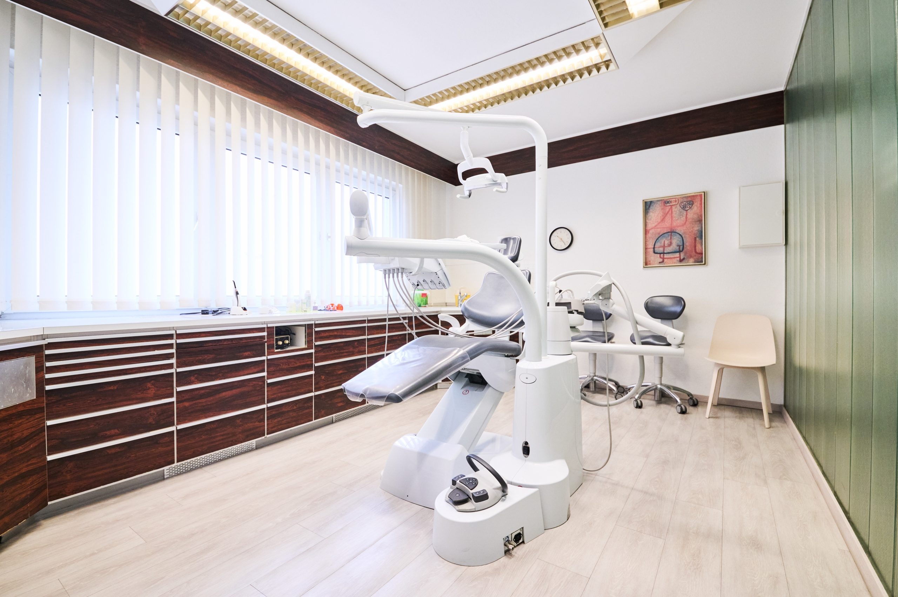
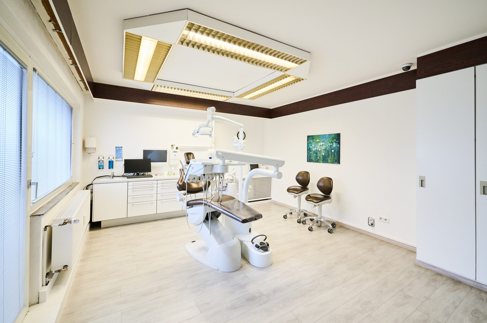

Unsere Praxis —
Modern, Herzlich, Vertrauensvoll
Eine Praxis mit Geschichte, Herzblut und modernster Ausstattung — seit über 40 Jahren für Ihre Zahngesundheit in Winsen (Luhe).
Zurück zur StartseiteEine Praxis mit Tradition
Gegründet von Dr. Wilhelm Heinrich Kielhorn und Ingrid Schierz-Kielhorn, heute mit Herzblut weitergeführt von ihrem Sohn Dr. Christopher Kielhorn. Seit über 40 Jahren versorgen wir Patienten in Winsen (Luhe) und der gesamten Region.
Was 1980 als kleine Praxis begann, ist heute ein modernes Behandlungszentrum mit eigenem Labor, digitalem Röntgen und 3D-Diagnostik.
1980
Gründung der Praxis
Dr. Wilhelm Heinrich Kielhorn und Ingrid Schierz-Kielhorn eröffnen die Zahnarztpraxis in Winsen (Luhe) — mit dem Anspruch, Patienten wie Freunde zu behandeln.
1990er – 2010er
Wachstum & Modernisierung
Kontinuierliche Erweiterung: eigenes Dentallabor, neue Behandlungsräume und der Einstieg in die digitale Zahnmedizin mit modernsten Geräten.
2023
Übergabe an die 2. Generation
Dr. Christopher Kielhorn übernimmt die Praxis und verbindet die jahrzehntelange Familientradition mit modernsten Behandlungsmethoden und frischem Elan.
Heute
Modernes Behandlungszentrum
Digitales Röntgen, 3D-Diagnostik, eigenes Labor und ein engagiertes Team — für höchste Qualität und echte menschliche Wärme.
Moderne Räume —
für Ihren Komfort





Moderne Behandlungsräume für optimalen Komfort — Ihre Gesundheit in bester Umgebung
Eigenes Dentallabor —
höchste Qualität
Wir betreiben ein modernes eigenes Labor — für höchste Qualität und Schnelligkeit. Kurze Wege bedeuten: schnellere Ergebnisse, persönlichere Abstimmung, bessere Passgenauigkeit.

Schnelle Ergebnisse
Anpassungen und Reparaturen sofort, ohne externe Wartezeit — wir liefern, wenn Sie es brauchen.
Hohe Qualität
Direkte Kontrolle und Überwachung durch unser Team — höchste Präzision bei jedem Werkstück.
Individuelle Anpassung
Jeder Zahnersatz genau nach Ihren Wünschen und Bedürfnissen gefertigt — für ein perfektes Ergebnis.
Kurze Wege
Direkter Kontakt zwischen Zahnarzt und Zahntechniker — für optimale Abstimmung und beste Ergebnisse.
Anfahrt & Öffnungszeiten
Praxisadresse
21423 Winsen (Luhe)
Öffnungszeiten
| Montag | 08:00 – 13:00 / 14:00 – 18:00 Uhr |
| Dienstag | 08:00 – 13:00 / 14:00 – 17:00 Uhr |
| Mittwoch | 08:00 – 13:00 Uhr |
| Donnerstag | 08:00 – 13:00 / 14:00 – 18:00 Uhr |
| Freitag | 08:00 – 13:00 Uhr |
| Sa / So | Geschlossen |
Lernen Sie uns persönlich kennen
Vereinbaren Sie noch heute einen Termin — wir freuen uns darauf, Sie und Ihre Familie zu begleiten.